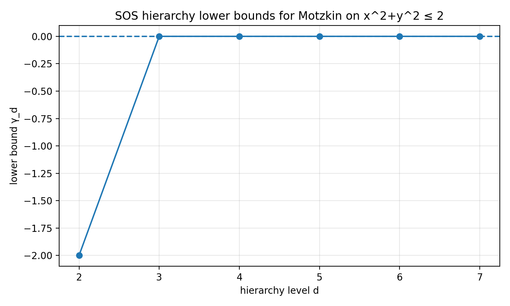

These are some additional resources for the talk.
You can find figures and references in here (after the talk).
The code for figures and numerical examples is hosted at gh:lcwllmr/momsos.
In particular, check out:
The Motzkin polynomial as surface plot:
Optimizing the Motzkin polynomial using the SOS hierarchy
